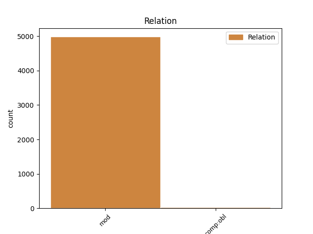
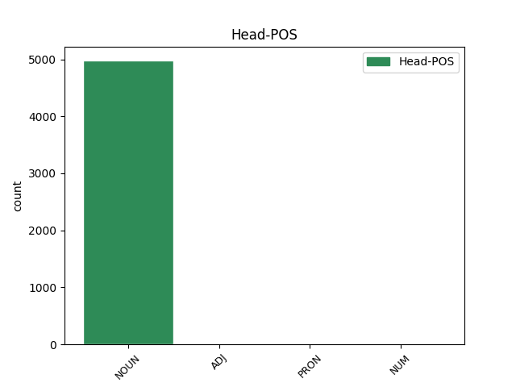
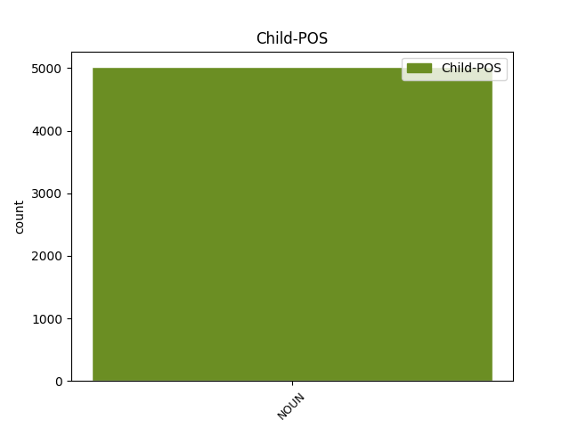

Distribution of features within this leaf



Agreement Rules sorted by frequency.
- When the dependent token is the modifer(mod) of the head token, and the head token is NOUN and the dependent token is NOUN.
1 Mai _ _ _ _ 0 _ _ _
2 există _ _ _ _ 0 _ _ _
3 o _ _ _ _ 0 _ _ _
4 cale _ _ _ _ 0 _ _ _
5 de _ _ _ _ 0 _ _ _
6 eliminare _ _ _ _ 0 _ _ _
7 a _ _ _ _ 0 _ _ _
8 reducerii reducere NOUN Ncfsoy Case=Dat,Gen|Definite=Def|Gender=Fem|Number=Sing 0 _ _ _
9 deviațiilor deviație NOUN Ncfpoy Case=Dat,Gen|Definite=Def|Gender=Fem|Number=Plur 8 mod _ SpaceAfter=No
10 . _ _ _ _ 0 _ _ _
1 Bolnavul _ _ _ _ 0 _ _ _
2 a _ _ _ _ 0 _ _ _
3 dezvoltat _ _ _ _ 0 _ _ _
4 o _ _ _ _ 0 _ _ _
5 epididimită _ _ _ _ 0 _ _ _
6 acută _ _ _ _ 0 _ _ _
7 pe _ _ _ _ 0 _ _ _
8 partea _ _ _ _ 0 _ _ _
9 opusă _ _ _ _ 0 _ _ _
10 celei acela PRON Pd3fso Case=Dat,Gen|Gender=Fem|Number=Sing|Person=3|PronType=Dem 0 _ _ _
11 a _ _ _ _ 0 _ _ _
12 calculului calcul NOUN Ncmsoy Case=Dat,Gen|Definite=Def|Gender=Masc|Number=Sing 10 mod _ _
13 înlăturat _ _ _ _ 0 _ _ _
14 , _ _ _ _ 0 _ _ _
15 a _ _ _ _ 0 _ _ _
16 8 _ _ _ _ 0 _ _ _
17 -a _ _ _ _ 0 _ _ _
18 zi _ _ _ _ 0 _ _ _
19 după _ _ _ _ 0 _ _ _
20 operație _ _ _ _ 0 _ _ _
21 și _ _ _ _ 0 _ _ _
22 tratamentul _ _ _ _ 0 _ _ _
23 indicat _ _ _ _ 0 _ _ _
24 de _ _ _ _ 0 _ _ _
25 examenul _ _ _ _ 0 _ _ _
26 microbiologic _ _ _ _ 0 _ _ _
27 repetat _ _ _ _ 0 _ _ _
28 și _ _ _ _ 0 _ _ _
29 care _ _ _ _ 0 _ _ _
30 a _ _ _ _ 0 _ _ _
31 arătat _ _ _ _ 0 _ _ _
32 o _ _ _ _ 0 _ _ _
33 infecție _ _ _ _ 0 _ _ _
34 urinară _ _ _ _ 0 _ _ _
35 provenind _ _ _ _ 0 _ _ _
36 desigur _ _ _ _ 0 _ _ _
37 de _ _ _ _ 0 _ _ _
38 deasupra _ _ _ _ 0 _ _ _
39 calculului _ _ _ _ 0 _ _ _
40 înlăturat _ _ _ _ 0 _ _ _
41 , _ _ _ _ 0 _ _ _
42 a _ _ _ _ 0 _ _ _
43 contribuit _ _ _ _ 0 _ _ _
44 la _ _ _ _ 0 _ _ _
45 dispariția _ _ _ _ 0 _ _ _
46 rapidă _ _ _ _ 0 _ _ _
47 a _ _ _ _ 0 _ _ _
48 fenomenelor _ _ _ _ 0 _ _ _
49 inflamatorii _ _ _ _ 0 _ _ _
50 acute _ _ _ _ 0 _ _ _
51 epididimare _ _ _ _ 0 _ _ _
52 . _ _ _ _ 0 _ _ _
1 Diagnosticul _ _ _ _ 0 _ _ _
2 pneumoniei _ _ _ _ 0 _ _ _
3 asociate asociat ADJ Afpfson Case=Dat,Gen|Definite=Ind|Degree=Pos|Gender=Fem|Number=Sing 0 _ _ _
4 ventilației ventilație NOUN Ncfsoy Case=Dat,Gen|Definite=Def|Gender=Fem|Number=Sing 3 comp:obl _ _
5 se _ _ _ _ 0 _ _ _
6 bazează _ _ _ _ 0 _ _ _
7 pe _ _ _ _ 0 _ _ _
8 criteriile _ _ _ _ 0 _ _ _
9 clinicoradiologice _ _ _ _ 0 _ _ _
10 și _ _ _ _ 0 _ _ _
11 bacteriologice _ _ _ _ 0 _ _ _
12 ( _ _ _ _ 0 _ _ _
13 examenul _ _ _ _ 0 _ _ _
14 microscopic _ _ _ _ 0 _ _ _
15 și _ _ _ _ 0 _ _ _
16 culturi _ _ _ _ 0 _ _ _
17 ) _ _ _ _ 0 _ _ _
18 . _ _ _ _ 0 _ _ _
1 Calul _ _ _ _ 0 _ _ _
2 s- _ _ _ _ 0 _ _ _
3 a _ _ _ _ 0 _ _ _
4 rănit _ _ _ _ 0 _ _ _
5 la _ _ _ _ 0 _ _ _
6 prima _ _ _ _ 0 _ _ _
7 săritură _ _ _ _ 0 _ _ _
8 și _ _ _ _ 0 _ _ _
9 chiar _ _ _ _ 0 _ _ _
10 dacă _ _ _ _ 0 _ _ _
11 a _ _ _ _ 0 _ _ _
12 fost _ _ _ _ 0 _ _ _
13 primul prim NUM Momsrly Case=Acc,Nom|Definite=Def|Gender=Masc|Number=Sing|NumForm=Word|NumType=Ord 0 _ _ _
14 cea _ _ _ _ 0 _ _ _
15 mai _ _ _ _ 0 _ _ _
16 mare _ _ _ _ 0 _ _ _
17 parte parte NOUN Ncfsrn Case=Acc,Nom|Definite=Ind|Gender=Fem|Number=Sing 13 mod _ ToDo=nmod
18 din _ _ _ _ 0 _ _ _
19 tură _ _ _ _ 0 _ _ _
20 nu _ _ _ _ 0 _ _ _
21 a _ _ _ _ 0 _ _ _
22 condus _ _ _ _ 0 _ _ _
23 niciodată _ _ _ _ 0 _ _ _
24 într-adevăr _ _ _ _ 0 _ _ _
25 cursa _ _ _ _ 0 _ _ _
26 . _ _ _ _ 0 _ _ _
1 ( _ _ _ _ 0 _ _ _
2 35 _ _ _ _ 0 _ _ _
3 ) _ _ _ _ 0 _ _ _
4 Beneficiarilor beneficiar NOUN Ncmpoy Case=Dat,Gen|Definite=Def|Gender=Masc|Number=Plur 0 _ _ _
5 statutului statut NOUN Ncmsoy Case=Dat,Gen|Definite=Def|Gender=Masc|Number=Sing 4 comp:obl _ _
6 de _ _ _ _ 0 _ _ _
7 refugiat _ _ _ _ 0 _ _ _
8 sau _ _ _ _ 0 _ _ _
9 ai _ _ _ _ 0 _ _ _
10 statutului _ _ _ _ 0 _ _ _
11 conferit _ _ _ _ 0 _ _ _
12 prin _ _ _ _ 0 _ _ _
13 protecție _ _ _ _ 0 _ _ _
14 subsidiară _ _ _ _ 0 _ _ _
15 ar _ _ _ _ 0 _ _ _
16 trebui _ _ _ _ 0 _ _ _
17 să _ _ _ _ 0 _ _ _
18 li _ _ _ _ 0 _ _ _
19 se _ _ _ _ 0 _ _ _
20 garanteze _ _ _ _ 0 _ _ _
21 accesul _ _ _ _ 0 _ _ _
22 la _ _ _ _ 0 _ _ _
23 îngrijirea _ _ _ _ 0 _ _ _
24 sănătății _ _ _ _ 0 _ _ _
25 atât _ _ _ _ 0 _ _ _
26 fizice _ _ _ _ 0 _ _ _
27 , _ _ _ _ 0 _ _ _
28 cât _ _ _ _ 0 _ _ _
29 și _ _ _ _ 0 _ _ _
30 mintale _ _ _ _ 0 _ _ _
31 . _ _ _ _ 0 _ _ _
Disagree Examples:
1 Îi _ _ _ _ 0 _ _ _
2 trecuse _ _ _ _ 0 _ _ _
3 prin _ _ _ _ 0 _ _ _
4 cap _ _ _ _ 0 _ _ _
5 ideea _ _ _ _ 0 _ _ _
6 că _ _ _ _ 0 _ _ _
7 fata _ _ _ _ 0 _ _ _
8 ar _ _ _ _ 0 _ _ _
9 fi _ _ _ _ 0 _ _ _
10 putut _ _ _ _ 0 _ _ _
11 lucra _ _ _ _ 0 _ _ _
12 pentru _ _ _ _ 0 _ _ _
13 Poliția poliție NOUN Ncfsry Case=Acc,Nom|Definite=Def|Gender=Fem|Number=Sing 0 _ _ _
14 Gândirii gândire NOUN Ncfsoy Case=Dat,Gen|Definite=Def|Gender=Fem|Number=Sing 13 mod _ SpaceAfter=No
15 . _ _ _ _ 0 _ _ _
1 Winston _ _ _ _ 0 _ _ _
2 se _ _ _ _ 0 _ _ _
3 duse _ _ _ _ 0 _ _ _
4 către _ _ _ _ 0 _ _ _
5 fereastră _ _ _ _ 0 _ _ _
6 : _ _ _ _ 0 _ _ _
7 avea _ _ _ _ 0 _ _ _
8 o _ _ _ _ 0 _ _ _
9 figură _ _ _ _ 0 _ _ _
10 fragilă _ _ _ _ 0 _ _ _
11 , _ _ _ _ 0 _ _ _
12 mai _ _ _ _ 0 _ _ _
13 degrabă _ _ _ _ 0 _ _ _
14 mică _ _ _ _ 0 _ _ _
15 , _ _ _ _ 0 _ _ _
16 iar _ _ _ _ 0 _ _ _
17 salopeta _ _ _ _ 0 _ _ _
18 albastră _ _ _ _ 0 _ _ _
19 , _ _ _ _ 0 _ _ _
20 care _ _ _ _ 0 _ _ _
21 era _ _ _ _ 0 _ _ _
22 uniforma uniformă NOUN Ncfsry Case=Acc,Nom|Definite=Def|Gender=Fem|Number=Sing 0 _ _ _
23 Partidului partid NOUN Ncmsoy Case=Dat,Gen|Definite=Def|Gender=Masc|Number=Sing 22 mod _ SpaceAfter=No|ToDo=nmod
24 , _ _ _ _ 0 _ _ _
25 scotea _ _ _ _ 0 _ _ _
26 în _ _ _ _ 0 _ _ _
27 evidență _ _ _ _ 0 _ _ _
28 cât _ _ _ _ 0 _ _ _
29 era _ _ _ _ 0 _ _ _
30 de _ _ _ _ 0 _ _ _
31 slab _ _ _ _ 0 _ _ _
32 . _ _ _ _ 0 _ _ _
1 Avea _ _ _ _ 0 _ _ _
2 un _ _ _ _ 0 _ _ _
3 păr _ _ _ _ 0 _ _ _
4 foarte _ _ _ _ 0 _ _ _
5 blond _ _ _ _ 0 _ _ _
6 și _ _ _ _ 0 _ _ _
7 o _ _ _ _ 0 _ _ _
8 față _ _ _ _ 0 _ _ _
9 sangvină _ _ _ _ 0 _ _ _
10 de _ _ _ _ 0 _ _ _
11 la _ _ _ _ 0 _ _ _
12 natură _ _ _ _ 0 _ _ _
13 , _ _ _ _ 0 _ _ _
14 cu _ _ _ _ 0 _ _ _
15 pielea _ _ _ _ 0 _ _ _
16 înăsprită _ _ _ _ 0 _ _ _
17 de _ _ _ _ 0 _ _ _
18 săpunul _ _ _ _ 0 _ _ _
19 prost _ _ _ _ 0 _ _ _
20 , _ _ _ _ 0 _ _ _
21 de _ _ _ _ 0 _ _ _
22 lamele _ _ _ _ 0 _ _ _
23 de _ _ _ _ 0 _ _ _
24 ras _ _ _ _ 0 _ _ _
25 tocite _ _ _ _ 0 _ _ _
26 și _ _ _ _ 0 _ _ _
27 de _ _ _ _ 0 _ _ _
28 frigul frig NOUN Ncmsry Case=Acc,Nom|Definite=Def|Gender=Masc|Number=Sing 0 _ _ _
29 iernii iarnă NOUN Ncfsoy Case=Dat,Gen|Definite=Def|Gender=Fem|Number=Sing 28 mod _ _
30 care _ _ _ _ 0 _ _ _
31 abia _ _ _ _ 0 _ _ _
32 trecuse _ _ _ _ 0 _ _ _
33 . _ _ _ _ 0 _ _ _
1 O _ _ _ _ 0 _ _ _
2 femeie _ _ _ _ 0 _ _ _
3 mică _ _ _ _ 0 _ _ _
4 de _ _ _ _ 0 _ _ _
5 statură _ _ _ _ 0 _ _ _
6 , _ _ _ _ 0 _ _ _
7 cu _ _ _ _ 0 _ _ _
8 părul _ _ _ _ 0 _ _ _
9 de _ _ _ _ 0 _ _ _
10 culoarea culoare NOUN Ncfsry Case=Acc,Nom|Definite=Def|Gender=Fem|Number=Sing 0 _ _ _
11 nisipului nisip NOUN Ncmsoy Case=Dat,Gen|Definite=Def|Gender=Masc|Number=Sing 10 mod _ SpaceAfter=No
12 , _ _ _ _ 0 _ _ _
13 care _ _ _ _ 0 _ _ _
14 lucra _ _ _ _ 0 _ _ _
15 în _ _ _ _ 0 _ _ _
16 boxa _ _ _ _ 0 _ _ _
17 de _ _ _ _ 0 _ _ _
18 lângă _ _ _ _ 0 _ _ _
19 a _ _ _ _ 0 _ _ _
20 lui _ _ _ _ 0 _ _ _
21 Winston _ _ _ _ 0 _ _ _
22 , _ _ _ _ 0 _ _ _
23 se _ _ _ _ 0 _ _ _
24 așezase _ _ _ _ 0 _ _ _
25 între _ _ _ _ 0 _ _ _
26 ei _ _ _ _ 0 _ _ _
27 . _ _ _ _ 0 _ _ _
1 În _ _ _ _ 0 _ _ _
2 clipa _ _ _ _ 0 _ _ _
3 următoare _ _ _ _ 0 _ _ _
4 , _ _ _ _ 0 _ _ _
5 tele-ecranul _ _ _ _ 0 _ _ _
6 cel _ _ _ _ 0 _ _ _
7 mai _ _ _ _ 0 _ _ _
8 mare _ _ _ _ 0 _ _ _
9 din _ _ _ _ 0 _ _ _
10 fundul fund NOUN Ncmsry Case=Acc,Nom|Definite=Def|Gender=Masc|Number=Sing 0 _ _ _
11 sălii sală NOUN Ncfsoy Case=Dat,Gen|Definite=Def|Gender=Fem|Number=Sing 10 mod _ _
12 slobozise _ _ _ _ 0 _ _ _
13 un _ _ _ _ 0 _ _ _
14 glas _ _ _ _ 0 _ _ _
15 sinistru _ _ _ _ 0 _ _ _
16 , _ _ _ _ 0 _ _ _
17 ca _ _ _ _ 0 _ _ _
18 scrâșnetul _ _ _ _ 0 _ _ _
19 unei _ _ _ _ 0 _ _ _
20 mașinării _ _ _ _ 0 _ _ _
21 neunse _ _ _ _ 0 _ _ _
22 . _ _ _ _ 0 _ _ _